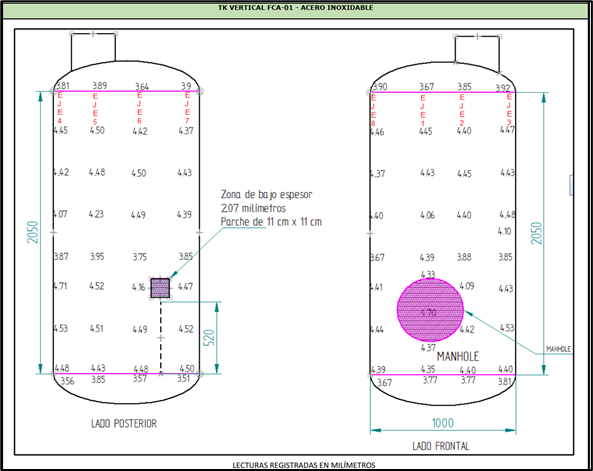

Medición de Espesores UT
Servicio especializado de medición de espesores por ultrasonido industrial (UT) para determinar el espesor actual o remanente en componentes metálicos, sin necesidad de cortar o dañar la pieza.
📌 Aplicaciones principales
- Control de corrosión y desgaste
- Espesor remanente en componentes metálicos
- Evaluación en tanques y recipientes
- Mantenimiento industrial preventivo
🔍 ¿Qué se detecta?
- Pérdida de espesor
- Corrosión general
- Erosión interna
- Desgaste mecánico
📄 Entregables
- Informe técnico END
- Registro fotográfico
- Recomendaciones QA/QC
- Soporte para auditorías
📸 Medición en campo

Evaluación directa con equipo portátil en estructuras metálicas.
📸 Espesor remanente

Determinación del espesor actual para control de integridad.